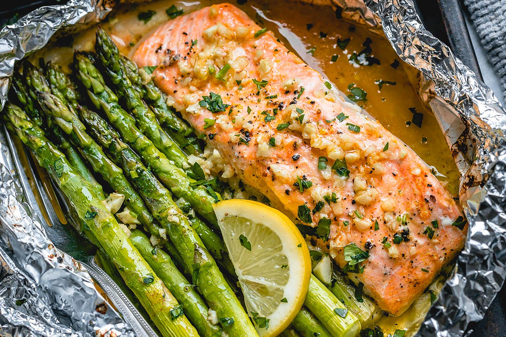

Salmon

Description
This salmon recipe is a delicious one that we make at home all the time. It's tasty, easy, and fast making it a perfect meal to make for the family on a weeknight. The best part about this recipe is that you can cook a lot at once and reheat the leftovers for an easy meal afterwards.
Ingredients
- Salmon cut into fillets (as much as you want)
- Chili powder
- Salt
- Pepper
- Garlic powder
- Onion powder
- Lemon pepper seasoning
- Minced garlic
- Olive oil
- Lime
Steps
- Preheat oven to 450
- Pat dry salmon with paper towels to get moisture off the surface
- Coat with olive oil
- Sprinkle the chili powder, salt, pepper, garlic powder, onion powder, lemon pepper until it looks nice and seasoned (remember, the seasoning has to carry through the whole fillet)
- Put the minced garlic on top and sprinkle some lime juice too
- Bake in the oven at 450 for 12-15 minutes
- Let it cool and serve with sides of your choice